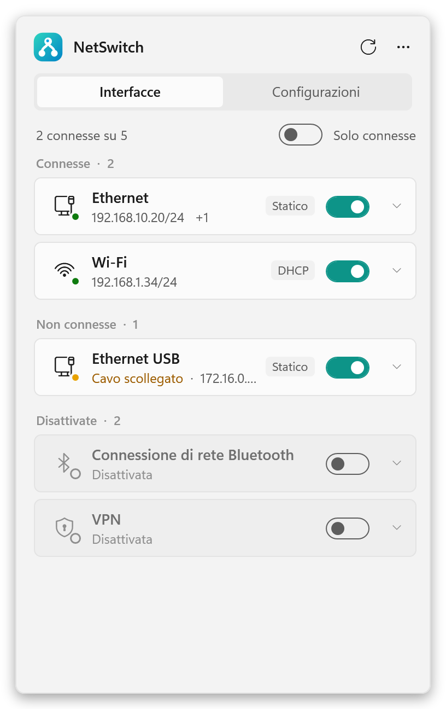

IP in formato CIDR
Scrivi 192.168.1.10/24 oppure /255.255.255.0. Puoi inserire più indirizzi separati da virgola. Gateway e DNS sono facoltativi.
NetSwitch è un pannello compatto nella tray di Windows e nella barra dei menu del Mac.
Cambi IP, subnet, gateway e DNS, passi al DHCP e attivi o disattivi le interfacce, senza
aprire le impostazioni di sistema o scrivere comandi netsh.

Pensato per chi passa spesso da una rete all'altra: laboratorio, ufficio, configurazione di apparati sul campo.
Scrivi 192.168.1.10/24 oppure /255.255.255.0. Puoi inserire più indirizzi separati da virgola. Gateway e DNS sono facoltativi.
Torni all'indirizzo e ai DNS automatici direttamente dalla scheda dell'interfaccia o dal menu del tasto destro.
Ogni interfaccia ha il suo interruttore. Lo stato si vede subito: connessa, non connessa o disattivata.
Salvi i profili che usi spesso ("Laboratorio", "Ufficio"…) e li applichi a qualsiasi interfaccia dal pannello o dal menu.
Il pannello si apre accanto all'orologio, nella tray di Windows o nella barra dei menu del Mac, e si chiude cliccando altrove o con Esc. Può partire all'accesso.
Senza installazione né dipendenze: su Windows un eseguibile di circa 200 KB con .NET Framework e WPF già inclusi nel sistema, su Mac un'app nativa Swift/AppKit. Segue il tema e il colore d'accento di sistema.
Editor, conferme ed esiti delle operazioni compaiono dentro lo stesso pannello compatto.
Sotto il cofano NetSwitch usa netsh e WMI su Windows, networksetup su Mac: esattamente come faresti a mano, ma in un clic.
# prima: a mano, da prompt elevato PS> netsh interface ipv4 set address "Ethernet" static 192.168.10.20 255.255.255.0 192.168.10.1 PS> netsh interface ipv4 set dnsservers "Ethernet" static 1.1.1.1 primary PS> netsh interface ipv4 add dnsservers "Ethernet" 8.8.8.8 index=2 PS> netsh interface set interface "Wi-Fi" admin=disabled # ...e domani di nuovo, al contrario
# dopo: dalla tray ▸ clic sull'icona accanto all'orologio ▸ Ethernet ▸ Configurazione ▸ "Ufficio" ✓ Configurazione applicata a Ethernet ▸ Wi-Fi ▸ interruttore off ✓ Interfaccia disattivata
Scarica la versione per il tuo sistema e avviala: l'icona compare nella tray di Windows (dopo il prompt UAC) o nella barra dei menu del Mac. Su Mac apri il DMG e trascina NetSwitch in Applicazioni. Dal menu ⋯ puoi attivare l'avvio automatico.
Le app non sono firmate con un certificato: Windows SmartScreen può segnalare l'eseguibile (scegli Ulteriori informazioni → Esegui comunque); su Mac, solo al primo avvio, consentila da Impostazioni di Sistema → Privacy e sicurezza → Apri comunque. In alternativa compilale tu dai sorgenti.
Su Windows basta il compilatore C# incluso nel sistema; su Mac gli Strumenti da riga di comando di Xcode.
Esclusione di responsabilità. NetSwitch è fornito gratuitamente "così com'è" (as is), senza garanzie di alcun tipo, esplicite o implicite, incluse quelle di funzionamento, idoneità a uno scopo specifico o assenza di errori. Il software modifica la configurazione di rete del computer: l'utente lo utilizza a proprio rischio ed è responsabile di verificarne l'idoneità e le impostazioni applicate. In nessun caso lo sviluppatore potrà essere ritenuto responsabile di danni diretti o indiretti, perdite di dati, interruzioni di servizio o di connettività, o di qualsiasi altra conseguenza derivante dall'uso o dall'impossibilità di usare il software.